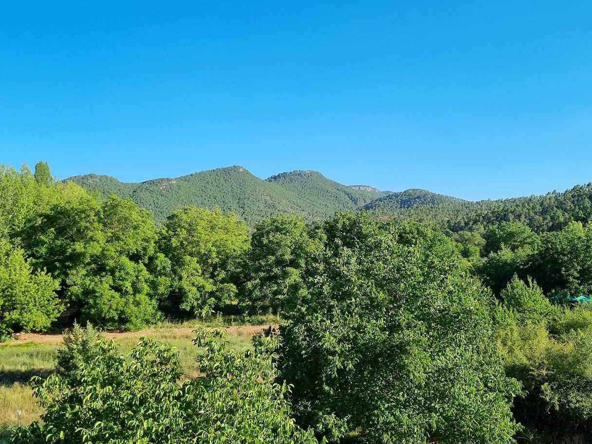

Rutas Interpretativas
Diseño e implementación de itinerarios guiados y autoguiados para grupos escolares, familias y empresas de ecoturismo. Con señalética interpretativa, cuadernos de campo y recursos digitales.
Cada paisaje cuenta una historia.
Yo te ayudo a leerla.
Rutas, materiales y proyectos para conectar personas con su entorno.
Cada proyecto parte del análisis del lugar: su geología, su biodiversidad, su historia. El programa surge de escuchar el territorio y a quienes lo habitan.
Diseño e implementación de itinerarios guiados y autoguiados para grupos escolares, familias y empresas de ecoturismo. Con señalética interpretativa, cuadernos de campo y recursos digitales.
Talleres de aula y campo adaptados a cada etapa educativa: Primaria, Secundaria y Bachillerato. Metodología activa, materiales propios y vinculación curricular.
Inventario y catalogación de patrimonio natural y cultural para ayuntamientos, diputaciones y fundaciones. Informes técnicos, fichas de enclaves y propuestas de interpretación o musealización.
Boniches es un pequeño pueblo rodeado de pinares, ríos y formaciones rocosas que guardan millones de años de historia. En la Serranía Baja de Cuenca, a 1.026 metros de altitud, el Rodenal de Boniches —Monumento Natural— y las Hoces del Cabriel —Red Natura 2000— configuran un territorio de excepcional valor.
Misión Boniches no es una ruta cualquiera: es una aventura diseñada para explorar la naturaleza de una forma diferente, combinando senderismo y juegos de observación. Un proyecto completo de recuperación e interpretación del patrimonio perdido del municipio.

Un territorio no se entiende sin sus dos dimensiones: la que ha formado la naturaleza y la que han construido las personas. Trabajo en las dos.
"En cada paseo por la naturaleza, uno recibe mucho más de lo que busca." — John Muir
Geología, geomorfología, flora, fauna, ecosistemas. Inventario de espacios naturales, propuestas de interpretación y diseño de actividades de campo centradas en el conocimiento del medio.
Arqueología, etnografía, arquitectura popular, paisajes culturales. Documentación, puesta en valor y diseño de programas de interpretación que conecten a las comunidades con su historia.
"Este ha sido mi camino: implicarme emocionalmente con el patrimonio ajeno hasta sentirlo mío."— Noelia Chaparro Puente
Cuadernos de campo, guías didácticas y recursos para docentes elaborados a partir de proyectos reales en el territorio.
Guía de la Naturaleza · Educadora Ambiental · Intérprete del Patrimonio
Educadora ambiental especializada en la interpretación del patrimonio natural y cultural. Trabajo con ayuntamientos, diputaciones, fundaciones, parques naturales y centros educativos para diseñar programas que pongan en valor el territorio desde una perspectiva científica, didáctica y comunitaria.
Mi enfoque parte de un principio sencillo: la mejor forma de proteger un territorio es conseguir que la gente lo conozca, lo comprenda y lo quiera. Por eso diseño programas que van del rigor científico a la experiencia emocional, pasando por la pedagogía activa y el trabajo de campo.
Si representas un ayuntamiento, diputación, fundación, parque natural o empresa de turismo de naturaleza, escríbeme y diseñamos juntas un programa a medida: desde el diagnóstico del territorio hasta la entrega de materiales y la formación del equipo.